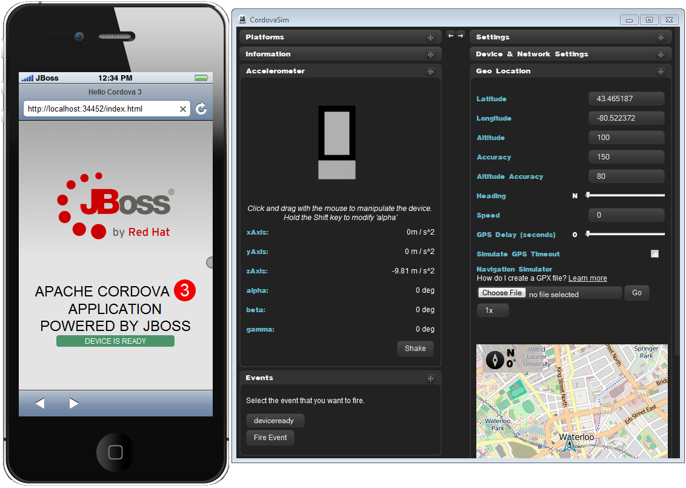
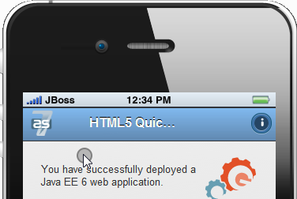
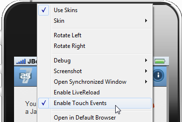

< LiveReload OpenShift Tools >
BrowserSim/CordovaSim |
|
|
Cordova 3 support in CordovaSim
|
CordovaSim is moved to the simulation of Cordova 3 projects. Now it is able to simulate the environment of Cordova 3.1, multiple version support is in our plans for JBoss Tools 4.2.0.  Related JIRA: JBIDE-15302. |
|
Simulation of Touch Events
|
BrowserSim and CordovaSim got touch events simulation. It gives the ability to simulate  The simulation is disabled by default. You should use the context menu to enable it:  Related JIRA: JBIDE-12192. |